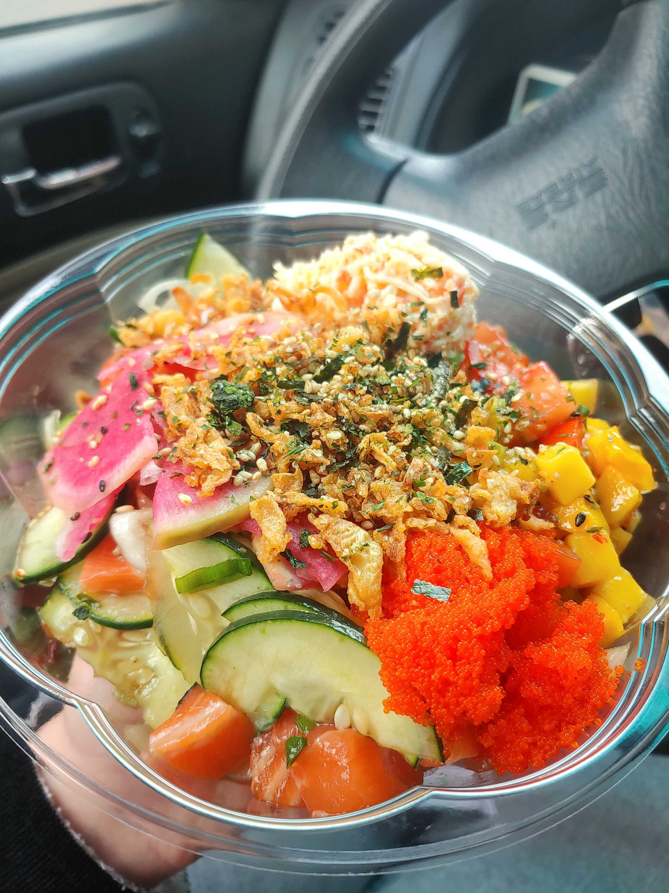
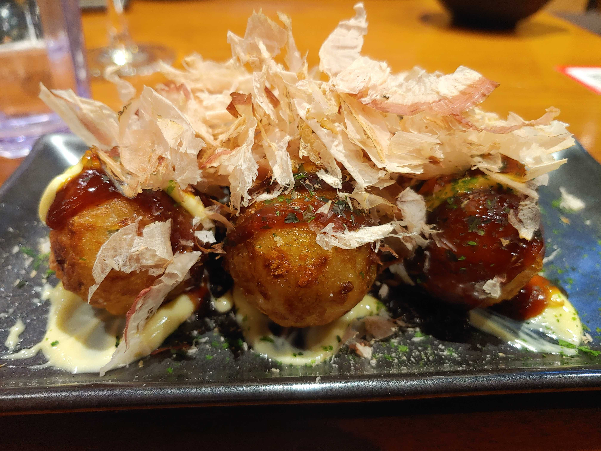
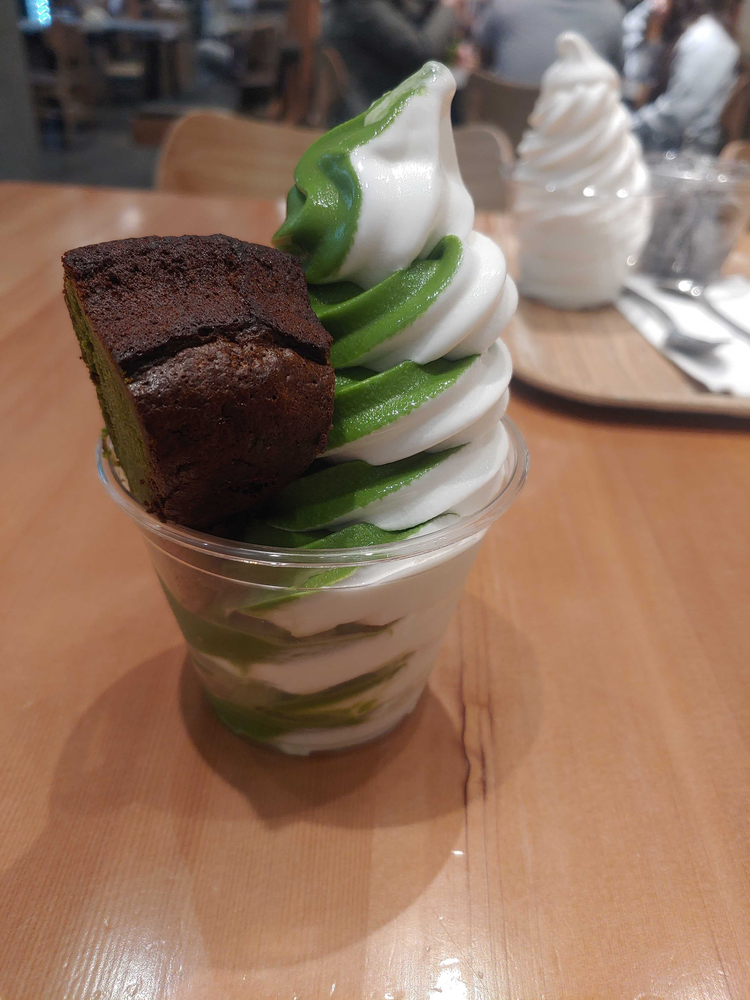

Haymaker! A wonderful delicious resturant located in West Seattle. I had a chance to take advantage of restaurant week and try their 3 course meal. Pictured above was a cocktail with gin along with their beautiful pork chop entree. Unfortunatley I ate the dessert too fast before taking a picture!
What your looking at is FOB poke in Capitol Hill, conveniently located across the street from a community college. Fresh tasting fish, with eye catching watermelon radish! Friendly staff and a filling meal!
Look at those balls! Here is takoyaki, a wonderful appetizer from Kizuki Ramen and right around the corner from Haymaker! This dish in particular, dances for you! Definantly a must try! Inside this battered ball is filled with scallions, octopus and a few other ingredients that are cooked in a special skillet to get that circular shape. It is topped with a sweet and savory sauce that is to die for!
To wrap up all these savory dishes is one of my favorite dessert spots called Nanas Green Tea located near south lake union. Here is a matcha vanilla swirl soft serve with a slice of matcha cake. This is an asian inspired cafe where you can get your matcha fix! A perfect sweetness to finish off your savory meals.